청소년상담사-2급(2교시) (2021-10-09 기출문제)
1과목: 진로상담
1. 수퍼(D. Super)의 발달모형에 바탕을 둔 진로상담 과정을 순서대로 옳게 나열한 것은?
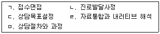
- ㄱ - ㄴ - ㄷ - ㄹ – ㅁ
- ㄱ - ㄴ - ㄷ - ㅁ – ㄹ
- ㄱ - ㄴ - ㄹ - ㄷ - ㅁ
- ㄱ - ㄴ - ㅁ - ㄷ – ㄹ
- ㄱ - ㄷ - ㄴ - ㄹ - ㅁ
(정답률: 알수없음)

2. 진로상담과정에서 발생할 수 있는 저항에 해당하지 않는 것은?
- 자신이 바라거나 바라지 않던 통찰에 참여하기
- 상담자의 상담방법을 이유 없이 비난하기
- 책임지기를 두려워하여 진로의사결정을 회피하기
- 반복적으로 상담시간에 연락 없이 오지 않기
- 상담시간에 계속 침묵하기
(정답률: 알수없음)
3. 다문화 진로상담에 관한 내용으로 옳은 것은?
- 다문화에 대한 사회인식은 고려사항이 아니다.
- 내담자가 한국문화를 따르도록 한다.
- 내담자의 문화에 대한 일반적인 생각을 알 필요는 없다.
- 다문화에 대한 상담자의 지식과 인식은 중요하다.
- 구성주의 진로상담이론은 다문화 내담자를 이해하는데 도움이 되지 않는다.
(정답률: 알수없음)
4. 가이스버스(N. Gysbers)와 무어(E. Moore)가 목표설정을 위하여 사용하는 진로상담 기법은?
- 생애진로무지개(Life Career Rainbow)
- 사다리 기법(Laddering Techniques)
- 생애진로사정(Life Career Assessment)
- 진로 가계도(Career Genogram)
- 면담 리드(Interview Leads)
(정답률: 알수없음)
5. 고용노동부 워크넷(www.work.go.kr)에서 제공하는 청소년 대상 직업심리검사를 모두 고른 것은?
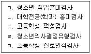
- ㄱ, ㄴ, ㄷ
- ㄱ, ㄹ, ㅁ
- ㄷ, ㄹ, ㅁ
- ㄱ, ㄴ, ㄷ, ㄹ
- ㄱ, ㄴ, ㄷ, ㅁ
(정답률: 알수없음)
6. 진로성숙도검사(CMI)에 관한 설명으로 옳은 것은?
- 크라이츠(J. Crites)의 진로의사결정모형에 근거하여 개발되었다.
- 진로계획태도와 진로행동을 측정하기 위하여 개발되었다.
- 진로행동은 자기평가, 직업정보, 목표선정, 계획, 문제해결을 측정한다.
- 진로계획태도는 자아존중감, 책임감, 타협성, 의존성을 측정한다.
- 한국교육개발원에서 개발한 한국형 진로성숙도 검사는 태도, 능력, 행동 세 가지 측면을 측정한다.
(정답률: 알수없음)
7. 베츠(N. Betz)와 해켓(G. Hackett)의 이론에서 5가지 진로상담전략으로 옳은 것은?
- 자기정체감 점검 및 강화
- 과정평가의 탐색과 현실성 강화
- 환경적 영향의 검토
- 진로준비정서의 촉진
- 진로의사결정 유형 점검
(정답률: 알수없음)
8. 구성주의 진로상담 과정과 기법에 관한 설명으로 옳은 것은?
- '구성 - 해체 - 재구성 - 협력구성'의 내러티브 방식을 기본으로 한다.
- 개인의 생활이나 정체성을 변화시키기 위해서는 환경을 변화시켜야 한다.
- 진로상담과정에서 진로양식면접을 최소화하고, 표준화된 검사실시와 결과의 해석을 주로 사용한다.
- 내담자의 내러티브 이야기 자체는 다른 사람과의 비교를 통하여 얻어진 평균적인 경험이라고 본다.
- '문제확인 - 주관적 정체성 탐색 - 문제 재정의 - 관점확대 - 정체성 실현을 위한 행동정의 - 추수지도' 단계로 이루어진다.
(정답률: 알수없음)
9. 다음 중 청소년 진로집단상담에서 고려해야 할 것을 모두 고른 것은?
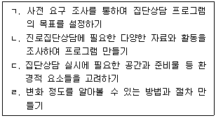
- ㄱ, ㄹ
- ㄷ, ㄹ
- ㄱ, ㄴ, ㄷ
- ㄴ, ㄷ, ㄹ
- ㄱ, ㄴ, ㄷ, ㄹ
(정답률: 알수없음)
10. 청소년 진로상담에서 사용하는 심리검사와 사용목적과의 연결이 옳은 것은?
- 수퍼(D. Super)의 CDI - 진로결정유형 측정
- 홀랜드(J. Holland)의 SDS - 직업적 성격특성 측정
- 크럼볼츠(J. Krumboltz)의 CDS - 진로 미결정 선행조건 측정
- 다위스(R. Dawis)와 롭퀴스트(L. Lofquist)의 MIQ - 진로문제해결과 진로의사결정에서의 역기능적 사고 측정
- 피터슨(G. Peterson), 샘슨(J. Sampson) 등의 CTI - 20가지 작업 요구와 가치에 대한 개인의 중요도 측정
(정답률: 알수없음)
11. 진로상담에서 심리검사를 활용할 때 옳은 것은?
- 시간이 오래 걸리더라도 검사는 많이 할수록 좋다.
- 검사를 선택할 때 검사문항보다 검사지명을 보고 선택한다.
- 신뢰도와 타당도가 갖추어진 검사를 선택한다.
- 절대적인 정보를 제공하는 검사를 활용한다.
- 검사결과를 활용할 때에는 강점만 활용하고 약점은 제외한다.
(정답률: 알수없음)
12. 다음 사례에 제시된 내담자에 대한 상담자의 개입으로 옳지 않은 것은?
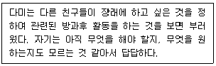
- 직업세계에 대한 탐색
- 자기이해를 위한 탐색
- 선택된 진로과정 점검
- 진로관련 심리검사 실시
- 진로관련 의사결정 연습
(정답률: 알수없음)
13. 다음 사례에 나타난 진로상담 단계는?
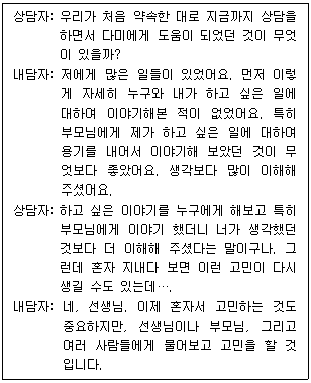
- 상담초기면접
- 상담관계형성
- 상담목표 설정
- 상담구조화
- 상담종결하기
(정답률: 알수없음)
14. 수퍼(D. Super)의 생애진로발달이론에서 제안한 진로발달단계 순서로 옳은 것은?
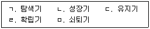
- ㄱ - ㄴ - ㄹ - ㄷ – ㅁ
- ㄱ - ㄹ - ㄷ - ㄴ – ㅁ
- ㄴ - ㄱ - ㄹ - ㄷ - ㅁ
- ㄴ - ㄷ - ㄱ - ㄹ – ㅁ
- ㄴ - ㄹ - ㄱ - ㄷ - ㅁ
(정답률: 알수없음)
15. 다음 대화 중 청소년 진로상담의 목표에 관한 진술로 옳지 않은 것은?
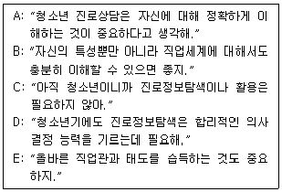
- A
- B
- C
- D
- E
(정답률: 알수없음)
16. 청소년을 대상으로 하는 진로상담에 관한 내용으로 옳지 않은 것은?
- 진로상담전문가 양성에 중점을 둔다.
- 상담윤리를 지키며 진행한다.
- 내담자의 문제를 내담자의 입장에서 이해한다.
- 내담자마다 성격, 적성, 흥미 등이 다름을 고려한다.
- 내담자의 잠재력을 발견하고 발현될 수 있도록 돕는다.
(정답률: 알수없음)
17. 진로상담 이론에 관한 설명으로 옳지 않은 것은?
- 다위스(R. Dawis)와 롭퀴스트(L. Lofquist)의 직업적응이론에서 성격은 성격양식과 성격구조로 설명된다.
- 파슨스(F. Parsons)의 특성ㆍ요인이론은 개인과 직업 특성의 합리적인 연결을 강조한다.
- 홀랜드(J. Holland) 이론은 개인이 자신의 특성과 유사한 직업환경을 선호하는 경향이 있다고 보았다.
- 사비카스(M. Savickas)의 구성주의 진로이론에서 생애주제란 진로와 관련된 각 개인의 능력, 욕구, 흥미를 의미한다.
- 로우(A. Roe)의 이론에서 비즈니스직은 다른 사람이 어떤 행동을 하도록 설득하는데 초점을 둔 직업군이다.
(정답률: 알수없음)
18. 크럼볼츠(J. Krumboltz)의 사회학습이론에 관한 설명으로 옳은 것을 모두 고른 것은?
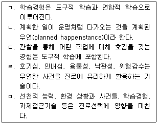
- ㄱ, ㄴ, ㄷ
- ㄱ, ㄹ, ㅁ
- ㄴ, ㄷ, ㄹ
- ㄴ, ㄹ, ㅁ
- ㄷ, ㄹ, ㅁ
(정답률: 알수없음)
19. 다음이 설명하는 갓프레드슨(L. Gottfredson)의 진로포부 발달단계는?
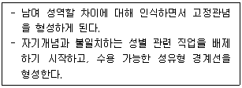
- 크기와 힘 지향 단계
- 외적 자아 확립 단계
- 사회적 가치 지향 단계
- 성역할 지향 단계
- 내적 자아 확립 단계
(정답률: 알수없음)
20. 다음 중 하렌(V. Harren)의 진로의사결정유형이론에 관한 설명으로 옳은 것을 모두 고른 것은?
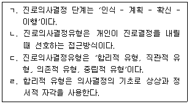
- ㄱ, ㄴ
- ㄱ, ㄷ
- ㄷ, ㄹ
- ㄱ, ㄴ, ㄷ
- ㄴ, ㄷ, ㄹ
(정답률: 알수없음)
21. 슐로스버그(N. Schlossberg) 등이 제시한 진로전환상담에 관한 내용으로 옳지 않은 것은?
- 전환의 개념을 결혼이나 출산과 같은 명백한 삶의 변화로 제한하였다.
- 진로전환에는 양가적인 특성이 있다.
- 개인의 진로전환에 영향을 주는 네 가지 요소(4S)는 자아(Self), 지원(Support), 상황(Situation), 전략(Strategies)이다.
- 진로전환의 증진요인으로는 경제적 안정, 정서적 안정, 건강, 전환 기술, 지지적 직업환경, 전환에 대한 지지 등이 있다.
- 진로전환검사(CTI)는 준비도, 자기효능감(confidence), 지각된 지지, 내외적 통제, 자기중심-관계중심(independence-interdependence)으로 구성된다.
(정답률: 알수없음)
22. 다음 중 다위스(R. Dawis)와 롭퀴스트(L. Lofquist)의 직업적응이론에 관한 설명으로 옳은 것을 모두 고른 것은?
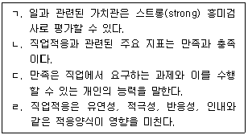
- ㄱ, ㄴ
- ㄱ, ㄷ
- ㄴ, ㄷ
- ㄴ, ㄹ
- ㄷ, ㄹ
(정답률: 알수없음)
23. 다음이 설명하는 사회인지진로이론(SCCT)의 개념으로 옳은 것은?
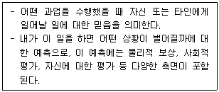
- 선택모형
- 결과기대
- 자기효능감
- 흥미발달모형
- 개인변인과 환경변인
(정답률: 알수없음)
24. 다음 이론을 주장한 학자는?
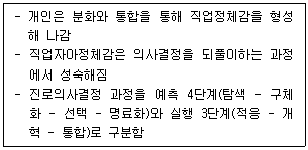
- 갓프레드슨(L. Gottfredson)
- 블라우(P. Blau)
- 타이드만(D. Tiedeman)과 오하라(R. O'Hara)
- 카크런(L. Cochran)
- 아들러(A. Adler)
(정답률: 알수없음)
25. '학자 - 진로상담이론 - 개념'의 연결이 옳지 않은 것은?
- 로우(A. Roe) - 욕구이론 - 심리적 욕구구조
- 윌리암슨(E. Williamson) - 특성ㆍ요인이론 - 제한과 타협
- 렌트(R. Lent) - 사회인지진로이론 - 자기효능감
- 긴즈버그(E. Ginzberg) - 진로발달이론 - 환상기
- 겔라트(H. Gelatt) - 진로의사결정이론 - 의사결정 순환과정
(정답률: 알수없음)
2과목: 집단상담
26. 교류분석 집단상담의 생활자세에 관한 설명으로 옳지 않은 것은?
- 생애 초기에 결정된다.
- 생활자세는 교류분석으로 변화 가능하다.
- 자신에 대해 느끼고, 타인과 관계 맺는 방식을 결정한다.
- 자기 긍정-타인 긍정 자세는 패배자는 없고, 승리자만 있다.
- 자기 긍정-타인 부정 자세는 타인과 비교해서 자신이 무기력하다고 느끼는 우울한 사람의 자세이다.
(정답률: 알수없음)
27. 로저스(C. Rogers)의 인간중심 집단상담에서 변화의 필요충분조건으로 옳은 것을 모두 고른 것은?
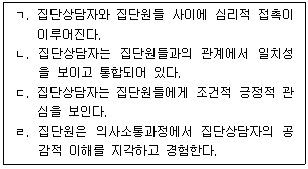
- ㄱ, ㄴ
- ㄴ, ㄷ
- ㄱ, ㄴ, ㄹ
- ㄱ, ㄷ, ㄹ
- ㄴ, ㄷ, ㄹ
(정답률: 알수없음)
28. 학교에서 운영할 수 있는 성장집단에 적합하지 않은 청소년 집단원을 모두 고른 것은?
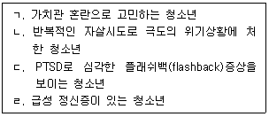
- ㄱ
- ㄱ, ㄷ
- ㄱ, ㄴ, ㄷ
- ㄴ, ㄷ, ㄹ
- ㄱ, ㄴ, ㄷ, ㄹ
(정답률: 알수없음)
29. 다음의 개념이나 기법이 강조되는 집단상담 접근은?
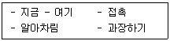
- 게슈탈트 집단상담
- 교류분석 집단상담
- 개인심리 집단상담
- 인간중심 집단상담
- 정신분석 집단상담
(정답률: 알수없음)
30. 심리극에 관한 설명으로 옳은 것을 모두 고른 것은?
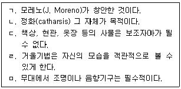
- ㄱ, ㄴ
- ㄱ, ㄹ
- ㄴ, ㄷ
- ㄴ, ㄷ, ㄹ
- ㄷ, ㄹ, ㅁ
(정답률: 알수없음)
31. 다음 대화에서 집단원이 보이는 얄롬(I. Yalom)의 치료적 요인은?
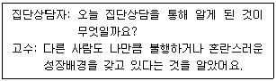
- 희망
- 수용
- 보편성
- 정화
- 이타심
(정답률: 알수없음)
32. 다음 사례에서 청소년 집단상담자가 적용한 기법은?
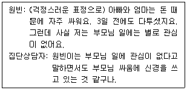
- 재진술
- 차단
- 요약
- 직면
- 정보제공
(정답률: 알수없음)
33. 현실치료 집단상담에 관한 설명으로 옳지 않은 것은?
- 스스로의 선택에 대해 책임진다.
- 전이를 인정하지 않는다.
- 과거 경험과 기억선택에 초점을 둔다.
- 더 나은 선택을 하는 방법을 배운다.
- 적극적이고, 지시적이며, 교육적이다.
(정답률: 알수없음)
34. 구조화 집단상담에 관한 설명으로 옳은 것을 모두 고른 것은?
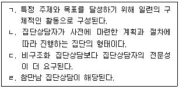
- ㄱ, ㄴ
- ㄷ, ㄹ
- ㄱ, ㄴ, ㄷ
- ㄱ, ㄷ, ㄹ
- ㄱ, ㄴ, ㄷ, ㄹ
(정답률: 알수없음)
35. 치료집단에 관한 설명으로 옳지 않은 것은?
- 심각한 정도의 정서ㆍ행동문제 또는 정신장애 치료를 목적으로 한다.
- 치료집단을 이끄는 사람을 집단치료자라고 한다.
- 집단역동을 이용하기 때문에 정신병리적 진단ㆍ평가를 활용하지 않는다.
- 공황장애 치료를 원하는 사람이 참가할 수 있다.
- 치료기간이 최대 수년에 이르기까지 장기적으로 진행된다.
(정답률: 알수없음)
36. 집단상담자의 자질을 인간적 자질과 전문적 자질로 구분할 때, 인간적 자질을 모두 고른 것은?
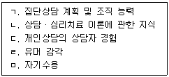
- ㄱ, ㄴ
- ㄴ, ㄷ
- ㄷ, ㄹ
- ㄹ, ㅁ
- ㄷ, ㄹ, ㅁ
(정답률: 알수없음)
37. 다음 사례에서 청소년 집단상담자가 적용한 기법은?
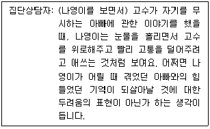
- 재진술
- 요약
- 직면
- 정보제공
- 해석
(정답률: 알수없음)
38. 문제 상황에 대처하는 집단상담자의 행동으로 옳지 않은 것은?
- 집단원의 불평이 습관적이거나 만성적이라면 불평할 때마다 충고를 한다.
- 적대적인 집단원에게는 그 행동이 다른 집단원에게 미치는 영향에 대해 이야기하고, 원하는 것을 탐색하여 직접 표현하게 한다.
- 지속적으로 침묵하는 집단원에게는 다른 집단원이 자신의 침묵을 오해할 가능성도 있다는 것을 알려준다.
- 질문공세를 하는 집단원에게는 질문하기 전 마음속의 생각과 느낌에 대해 이야기하도록 요청한다.
- 사실적 이야기를 늘어놓는 집단원에게는 그 경험에서 야기된 감정을 공감적 이해를 통해 현재형으로 표현하도록 한다.
(정답률: 알수없음)
39. 공동상담자가 청소년 집단상담을 진행할 때의 설명으로 옳은 것을 모두 고른 것은?
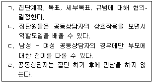
- ㄱ, ㄴ
- ㄴ, ㄷ
- ㄷ, ㄹ
- ㄴ, ㄷ, ㄹ
- ㄱ, ㄴ, ㄷ, ㄹ
(정답률: 알수없음)
40. 다음의 집단 유형은?
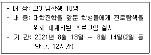
- 구조화된 동질적 구성의 집중적 집단
- 구조화된 이질적 구성의 집중적 집단
- 비구조화된 동질적 구성의 집중적 집단
- 비구조화된 이질적 구성의 분산적 집단
- 구조화된 동질적 구성의 분산적 집단
(정답률: 알수없음)
41. 청소년 집단상담의 사전 동의에 관한 설명으로 옳지 않은 것은?
- 자발적인 집단원에게도 사전동의를 받아야 한다.
- 집단상담자의 경력, 이론적 지향, 도움제공이 가능한 문제를 알린다.
- 집단참여에 따른 잠재적 이익과 위험에 대해서 알린다.
- 폐쇄집단에서는 집단을 떠날 권리가 없음을 알린다.
- 심리검사, 진단 및 상담 기록에 대해 알 권리가 있음을 알린다.
(정답률: 알수없음)
42. 아들러(A. Adler) 집단상담의 단계를 순서대로 나열한 것은?
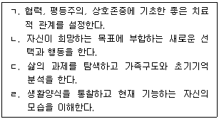
- ㄱ - ㄷ - ㄹ – ㄴ
- ㄱ - ㄹ - ㄷ – ㄴ
- ㄴ - ㄷ - ㄹ - ㄱ
- ㄷ - ㄱ - ㄹ – ㄴ
- ㄷ - ㄹ - ㄱ - ㄴ
(정답률: 알수없음)
43. 정신분석 집단상담에 관한 설명으로 옳지 않은 것은?
- 슬랩손(S. Slavson)은 집단상담자의 기능을 지도적 기능, 자극적 기능, 확충적 기능, 해석적 기능으로 구분한다.
- 볼프(A. Wolf)는 집단상담자가 자신을 향한 집단원들의 전이행동을 처리할 수 있어야 한다고 본다.
- 집단에서 과거를 재경험하여 무의식적 갈등을 해소할 수 있는 기회를 제공한다.
- 궁극적인 목표는 내담자의 신경증적 갈등을 경감시켜 인격적 성숙을 도모하는 것이다.
- 어린 시절의 습관적인 행동이 집단에서 반복적으로 드러나는 것은 반동형성의 한 형태이다.
(정답률: 알수없음)
44. 다음 사례에서 집단원 동호가 하고 있는 문제행동은?
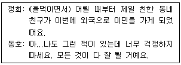
- 산만한 집단원
- 구원하는 집단원
- 부정적인 집단원
- 소극적인 집단원
- 적대적인 집단원
(정답률: 알수없음)
45. 청소년 집단상담 평가를 위한 구성요소를 모두 고른 것은?
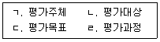
- ㄱ, ㄴ
- ㄴ, ㄷ
- ㄱ, ㄴ, ㄷ
- ㄴ, ㄷ, ㄹ
- ㄱ, ㄴ, ㄷ, ㄹ
(정답률: 알수없음)
46. 청소년을 위한 집단 운영에 관한 설명으로 옳지 않은 것은?
- 청소년의 흥미유발을 위해 다양한 매체와 도구를 활용할 수 있다.
- 청소년기의 특성인 자율성을 충족시키기 위해 집단상담자와 집단원이 공동상담자가 된다.
- 집단목표 설정은 청소년기 발달특성을 고려한다.
- 치료집단을 운영할 때는 법적 보호자의 참가 동의서를 받는다.
- 강제에 의한 비자발적인 참여를 하게 되면 집단에 대한 저항감이 클 수 있다.
(정답률: 알수없음)
47. 구조화 집단상담 계획에 관한 내용으로 옳지 않은 것은?
- 집단상담의 필요성에 대한 타당한 근거를 제시한다.
- 집단목적에 부합하는 집단 참여대상의 범위를 결정한다.
- 집단목적을 달성하기 위해 단계적인 세부목표를 설정한다.
- 집단상담자는 직관적 판단으로 집단형태를 결정한다.
- 집단활동의 내용은 집단 목적에 적합하게 구성한다.
(정답률: 알수없음)
48. 학교 집단상담의 시행절차를 순서대로 나열한 것은?
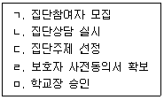
- ㄱ - ㄷ - ㅁ - ㄹ – ㄴ
- ㄱ - ㄹ - ㄷ - ㅁ – ㄴ
- ㄷ - ㄱ - ㄴ - ㅁ - ㄹ
- ㄷ - ㅁ - ㄱ - ㄹ – ㄴ
- ㄷ - ㅁ - ㄱ - ㄴ - ㄹ
(정답률: 알수없음)
49. 집단상담 초기단계에 있는 집단원들의 특징으로 옳지 않은 것은?
- 집단에 대해 비합리적인 기대를 하기도 한다.
- 자기표현을 하기에 안전한지 탐색한다.
- 불안과 긴장이 있기 때문에 의존적이고 소극적으로 행동하는 경향이 있다.
- 새로운 사람들과의 만남으로 자기개방에 부담을 느껴 집단 참여를 머뭇거린다.
- 집단원들을 판단하고 비난하며 경쟁적인 모습을 보이기도 한다.
(정답률: 알수없음)
50. 코리(G. Corey)의 과도기 단계(transition stage)에서 집단상담자의 역할을 모두 고른 것은?
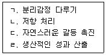
- ㄱ
- ㄴ, ㄷ
- ㄷ, ㄹ
- ㄱ, ㄴ, ㄹ
- ㄴ, ㄷ, ㄹ
(정답률: 알수없음)
3과목: 가족상담
51. 다음이 설명하는 가족상담기법은?
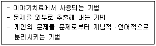
- 과제부여
- 가계도
- 외재화
- 예외질문
- 가족조각
(정답률: 알수없음)
52. 해결중심단기가족상담에 관한 설명으로 옳은 것을 모두 고른 것은?
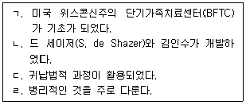
- ㄱ, ㄴ
- ㄴ, ㄷ
- ㄱ, ㄴ, ㄷ
- ㄱ, ㄷ, ㄹ
- ㄴ, ㄷ, ㄹ
(정답률: 알수없음)
53. 보웬(M. Bowen)의 가족상담이론의 개념으로 옳은 것은?
- 가족게임
- 실연화
- 권력과 통제
- 하위체계
- 핵가족 정서체계
(정답률: 알수없음)
54. 해결중심단기가족상담의 중심철학으로 옳은 것을 모두 고른 것은?
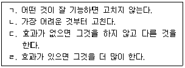
- ㄱ, ㄴ
- ㄴ, ㄷ
- ㄷ, ㄹ
- ㄱ, ㄷ, ㄹ
- ㄴ, ㄷ, ㄹ
(정답률: 알수없음)
55. 다음은 가족상담이론의 질문기법이다. ( )에 들어갈 말은?
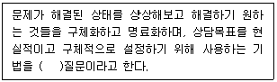
- 대처
- 기적
- 관계성
- 보람
- 척도
(정답률: 알수없음)
56. 다음이 설명하는 카터(B. Carter)와 맥골드릭(M. McGoldrick)의 가족생활주기 단계는?
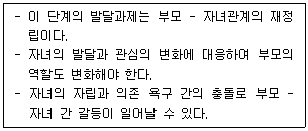
- 새롭게 출발하는 가족
- 어린 자녀를 둔 가족
- 청소년기 자녀를 둔 가족
- 자립하는 자녀를 둔 가족
- 노년기 가족
(정답률: 알수없음)
57. 이야기치료의 첫 번째 단계인 '문제의 경청과 해체의 단계'에 해당되지 않는 활동은?
- 문제 이야기 경청
- 문제 명명하기
- 문제의 영향 탐색
- 문제의 영향 평가
- 대안적 이야기 만들기
(정답률: 알수없음)
58. ( )에 들어갈 내용을 바르게 연결한 것은?
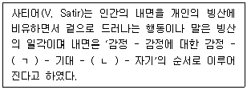
- ㄱ: 무의식, ㄴ: 열망
- ㄱ: 지각, ㄴ: 자아
- ㄱ: 지각, ㄴ: 열망
- ㄱ: 이성, ㄴ: 자아
- ㄱ: 이성, ㄴ: 무의식
(정답률: 알수없음)
59. 가족사정에 관한 맥매스터 모델(McMaster Model)에 관한 설명으로 옳은 것을 모두 고른 것은?
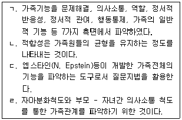
- ㄱ, ㄷ
- ㄴ, ㄷ
- ㄷ, ㄹ
- ㄱ, ㄴ, ㄹ
- ㄴ, ㄷ, ㄹ
(정답률: 알수없음)
60. 이야기치료의 기본가정(전제)으로 옳지 않은 것은?
- 세계와 인간경험은 개인이 해석하는 방식으로 존재한다.
- 삶의 이야기는 단선적이며, 정해진 방향대로 간다.
- 우리가 살아가는 이야기는 사회적 맥락 속에서 만들어진다.
- 삶의 이야기 속에는 사회적 담론과 자기정체성이 포함된다.
- 지배적 이야기를 해체하는 것이 새로운 가능성을 높여준다.
(정답률: 알수없음)
61. 대상관계 가족상담에 기초를 둔 개입방법은?
- 경계설정을 통한 가족의 재구성
- 해석과 훈습을 통한 가족관계 역동의 통찰
- 빙산탐색을 통한 내면 이해
- 기적질문을 통한 관계의 명료화
- 문제의 재명명을 통한 문제 이해
(정답률: 알수없음)
62. 다음 중 전략적 가족상담으로 분류되는 학자로 옳은 것을 모두 고른 것은?
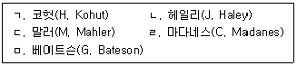
- ㄱ, ㄷ
- ㄴ, ㄹ
- ㄱ, ㄴ, ㄷ
- ㄴ, ㄹ, ㅁ
- ㄷ, ㄹ, ㅁ
(정답률: 알수없음)
63. 보웬(M. Bowen)의 가족상담 이론에 관한 설명으로 옳은 것은?
- 정서적 단절은 물리적 단절을 전제한다.
- 하위체계 사이의 위계를 변화시켜 재구조화한다.
- 분화수준이 높은 사람은 독립적이며 친밀한 관계를 맺지 않는다.
- 자기 위치 지키기(I-positioning)는 나 전달법(I-message)과 같은 기법이다.
- 출생순위 또는 형제자매 위치가 가족의 정서체계 안에서 특정한 역할과 기능을 한다.
(정답률: 알수없음)
64. 구조적 가족상담 이론에서 역기능적 가족의 재구조화에 관한 내용으로 옳지 않은 것은?
- 부모 하위체계와 별도로 부부 하위체계가 기능하도록 한다.
- 부모가 서로 지원하고 서로에게 적응함으로써 자녀에게 일관된 모습을 보여야 한다.
- 부모는 자녀끼리 협상하고 갈등이나 차이를 해결하도록 지원한다.
- 적절한 위계는 부모가 권위와 책임을 바탕으로 세대 간 차이를 인정하는 구조이다.
- 경계선이 밀착된 가족은 가족원 간의 상호작용 빈도를 증가시킴으로써 서로에 대한 보살핌과 지원을 제공하도록 한다.
(정답률: 알수없음)
65. 가족상담의 개념에 관한 설명으로 옳은 것을 모두 고른 것은?
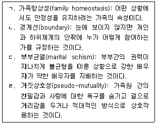
- ㄱ, ㄴ
- ㄴ, ㄷ
- ㄷ, ㄹ
- ㄱ, ㄴ, ㄷ
- ㄱ, ㄴ, ㄷ, ㄹ
(정답률: 알수없음)
66. 사티어(V. Satir) 가족상담에 관한 설명으로 옳은 것은?
- 가족의 역기능 현상을 제거하여 안정된 현재 상황에 머무르게 한다.
- 원가족 도표는 돌아가신 분들은 제외하고 현재 살아있는 가족원만 포함한다.
- 가족조각은 가족의 주요 생활사건을 연대별로 나열하여 그림으로 표현하는 기법이다.
- 원가족 삼인군에서 부여한 가족규칙을 따르도록 하여 가족결속력을 높인다.
- 경험적 가족치료자로서 갖춰야 될 3대 요소는 유능(Competent), 자신감(Confident), 일치(Con gruent)의 3C이다.
(정답률: 알수없음)
67. 가족체계이론에 관한 설명으로 옳지 않은 것은?
- 가족원 각각의 개인적 특성보다 상호연결성과 관계에 더 초점을 둔다.
- 부적(negative)피드백이 정적(positive)피드백보다 더 바람직하다.
- 가족체계는 가족원 개개인의 특성을 합한 것 그 이상이다.
- 가족원들은 개체로서 작용하며 일정한 속성을 가지고 상호작용한다.
- 가족체계가 건강하게 기능하기 위해서는 개방성과 폐쇄성 간의 적절한 균형을 이루어야 한다.
(정답률: 알수없음)
68. 전략적 가족상담 기법으로 옳은 것을 모두 고른 것은?
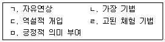
- ㄱ, ㄴ, ㄷ
- ㄴ, ㄹ, ㅁ
- ㄷ, ㄹ, ㅁ
- ㄴ, ㄷ, ㄹ, ㅁ
- ㄱ, ㄴ, ㄷ, ㄹ, ㅁ
(정답률: 알수없음)
69. 가족상담 이론과 상담목표의 연결로 옳은 것은?
- 경험적 가족상담 - 투사적 동일시를 통해 유지되어 온 가족관계를 이해한다.
- 전략적 가족상담 - 가족들이 발달상에서 이루어야 할 자아통합을 이루도록 돕는다.
- 다세대 가족상담 - 내담자가 정서체계에 따라 행동하게 한다.
- 구조적 가족상담 - 역기능적인 가족구조를 재구조화 한다.
- 이야기 치료 - 내담자가 호소하는 문제와 자신을 동일시하여 사회문화적 기준에 따르도록 한다.
(정답률: 알수없음)
70. 다음 대화에서 상담자가 시도하고 있는 상담기법은?
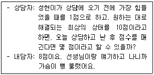
- 척도질문
- 예외질문
- 대처질문
- 과정질문
- 관계성질문
(정답률: 알수없음)
71. 다음 사례에 나타나는 가족역동을 가장 잘 설명하는 가족상담 개념은?
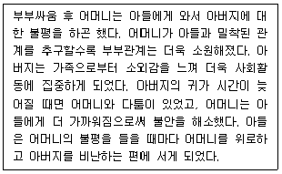
- 삼각관계
- 독특한 결과
- 기계론적 관점
- 선형적 인과관계
- 사회적 정서과정
(정답률: 알수없음)
72. 가족상담 기법에 관한 설명으로 옳은 것을 모두 고른 것은?
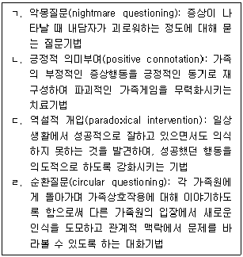
- ㄱ, ㄴ
- ㄴ, ㄹ
- ㄷ, ㄹ
- ㄱ, ㄴ, ㄷ
- ㄱ, ㄴ, ㄷ, ㄹ
(정답률: 알수없음)
73. 가족상담 윤리에 관한 내용으로 옳지 않은 것은?
- 내담자가 스스로 의사결정을 할 권리를 존중한다.
- 인종, 성별, 출신국가 등에 관계없이 내담자를 공정하게 대우해야 한다.
- 상담자는 내담자와 사적인 친밀관계, 성적관계, 동업자관계 등을 피해야 한다.
- 비밀보장은 상담관계를 유지하는데 기본이 되는 원칙이기 때문에 예외 없이 지켜져야 한다.
- 상담을 시작하기 전에 내담자에게 자신의 권리와 책임에 대해 충분히 설명한 후 동의를 구해야 한다.
(정답률: 알수없음)
74. 올슨(D. Olson) 등의 순환모델(Circumplex Model)에 관한 설명으로 옳지 않은 것은?
- 적응력은 가족의 변화를 허용하는 정도를 의미한다.
- 응집력은 가족원 사이의 정서적 결합의 정도를 의미한다.
- 적응력과 응집력은 높을수록 더 건강한 가족임을 의미한다.
- 순환모델을 바탕으로 개발된 평가도구는 FACES와 CRS가 있다.
- 가족체계이론을 바탕으로 가족기능에 관한 개념을 분석하여 귀납적으로 발전시킨 모델이다.
(정답률: 알수없음)
75. 사티어(V. Satir) 가족상담의 의사소통 및 대처유형에 관한 설명으로 옳은 것은?
- 회유형의 자원은 자기주장이다.
- 비난형은 자아존중감 요소 중 자기를 무시한다.
- 초이성형의 내면은 쉽게 상처받고 소외감을 느낀다.
- 산만형은 재미있고 익살스러워 내면에 쉽게 접촉할 수 있다.
- 일치형은 스스로를 방어하고 상황을 통제하는데 효과적이다.
(정답률: 알수없음)
4과목: 학업상담
76. 학습부진(underachievement)에 관한 설명으로 옳지 않은 것은?
- 학업성취수준이 잠재적 능력에 미치지 못하고 현격하게 떨어지는 상태를 말한다.
- 지능수준이 하위 3∼25%에 해당하고 지능지수는 약 75-90 정도에 속하는 학습자를 말한다.
- 물리적 환경, 심리적 환경이 원인이 되기도 한다.
- 비효율적인 학습전략을 가지고 있는 경우가 많다.
- 선수 학습의 누적된 결손을 보이는 경우가 많다.
(정답률: 알수없음)
77. 다음 설명은 길포드(J. Guilford)의 창의적 사고력의 구성 요인 중 무엇에 해당하는가?
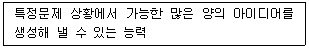
- 유창성(fluency)
- 유연성(flexibility)
- 민감성(sensitivity)
- 독창성(originality)
- 정교성(elaboration)
(정답률: 알수없음)
78. 반두라(A. Bandura)의 자기효능감이론에 관한 설명으로 옳지 않은 것은?
- 자기효능감은 과제수행에 필요한 행위를 조직하고 실행해나가는 자신의 능력에 대한 판단이다.
- 자기효능감이 높을수록 도전적이고 어려운 목표를 선호한다.
- 자기효능감은 결과기대와 같은 개념으로 사용된다.
- 성취경험, 대리경험, 사회적(언어적) 설득, 생리적 지표는 자기효능감의 원천이다.
- 자기효능감은 자기가치에 대한 평가결과로 얻어지는 자존감과 구별된다.
(정답률: 알수없음)
79. 몰입(flow)에 관한 설명으로 옳지 않은 것은?
- 개인이 흥미를 느끼는 과제수행에 몰입하여 최적 경험을 하는 심리적 상태다.
- 최적 경험은 자기목적적 경험이라고도 한다.
- 도전 수준이 너무 높고 기술 수준이 너무 낮은 경우 불안을 느낀다.
- 도전 수준이 기술 수준보다 너무 낮은 경우는 지루함을 느끼게 된다.
- 몰입 상태에서는 고도의 자기인식 상태에 빠지게 된다.
(정답률: 알수없음)
80. 교사와 학생이 상호작용하는 과정을 통해 교사의 기대가 자기충족적 예언(self-fulfilling prophecy)으로 작동하는 과정을 설명할 때 적절한 순서대로 나열한 것은?
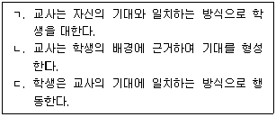
- ㄱ - ㄴ – ㄷ
- ㄱ - ㄷ – ㄴ
- ㄴ - ㄱ – ㄷ
- ㄴ - ㄷ – ㄱ
- ㄷ - ㄱ - ㄴ
(정답률: 알수없음)
81. 기억에 관한 설명으로 옳지 않은 것은?
- 작업기억은 정보가 장기기억으로 이동되거나 장기기억 내 지식과 통합될 수 있도록 전달자 기능을 한다.
- 작업기억의 수용 용량은 무제한이다.
- 일반지식에 관한 기억은 의미기억이고 개인적 경험과 관계된 기억은 일화기억이다.
- 부호화에 영향을 미치는 중요한 요인은 정교화와 조직화이다.
- 명제는 장기기억 속 지식과 의미의 기본단위이다.
(정답률: 알수없음)
82. 와이너(B. Weiner)의 귀인이론에 관한 설명으로 옳은 것은?
- 자신의 실패를 내부귀인 할 때보다 외부귀인 할 때 수치심을 더 강하게 느낀다.
- 다른 사람이 통제하는 요인에 의해 성공을 방해받을 경우 분노를 느낀다.
- 자신의 성공을 외부귀인 할 때 내부귀인 할 때보다 더 자긍심이 높아진다.
- 자신의 실패를 통제 가능한 원인으로 탓을 돌릴 때 학습된 무기력에 빠질 가능성이 높다.
- 수행에 대한 기대는 안정성 차원의 영향을 받지 않는다.
(정답률: 알수없음)
83. 창의적 사고를 증진시키는 발상기법에 관한 설명에 해당하는 것은?
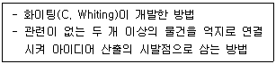
- PMI
- 브레인스토밍
- 강제관련법
- 체크리스트
- 장소법
(정답률: 알수없음)
84. 맥키치(W. Mckeachie)는 학습전략을 인지적, 초인지적, 자원관리의 세 가지 범주로 나누었다. 다음에 나열한 전략 중 초인지적 전략에 해당하는 것을 모두 고른 것은?
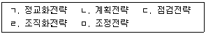
- ㄱ, ㄴ, ㄷ
- ㄱ, ㄴ, ㄹ
- ㄴ, ㄷ, ㄹ
- ㄴ, ㄷ, ㅁ
- ㄷ, ㄹ, ㅁ
(정답률: 알수없음)
85. 데시와 라이언(E. Deci & R. Ryan)은 자기결정이론에서 자율성과 관련하여 여섯 유형의 학습동기를 제시하였다. 다음이 설명하는 동기유형은?
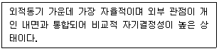
- 외적조절(external regulation)
- 부과된 조절(introjected regulation)
- 확인된 조절(identified regulation)
- 통합된 조절(integrated regulation)
- 내적조절(intrinsic regulation)
(정답률: 알수없음)
86. 드웩(C. Dweck)의 이론에서 수행목표지향성을 가진 학생들의 특징을 모두 고른 것은?
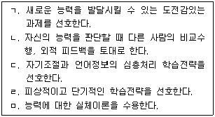
- ㄱ, ㄴ, ㄷ
- ㄴ, ㄷ, ㄹ
- ㄴ, ㄷ, ㅁ
- ㄴ, ㄹ, ㅁ
- ㄷ, ㄹ, ㅁ
(정답률: 알수없음)
87. 시간관리 매트릭스에서 중요도가 높고 긴급도가 낮은 분면에 해당하는 것을 모두 고른 것은?
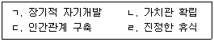
- ㄱ, ㄴ
- ㄷ, ㄹ
- ㄱ, ㄴ, ㄷ
- ㄴ, ㄷ, ㄹ
- ㄱ, ㄴ, ㄷ, ㄹ
(정답률: 알수없음)
88. 학업상담에서 상담자의 역할과 개입전략으로 옳지 않은 것은?
- 학습장애아 상담시 장애의 발달양상에 대한 충분한 지식을 가지고 그들이 실현해 나가는 과 정의 독특성을 이해해야 한다.
- 상담자가 제공할 수 있는 조력의 내용이 아니거나 정도를 넘어선 높은 수준의 개입전략이 요구되면 최선을 다해 조력해야 한다.
- 2차적 문제 발생의 예방을 위해 조기진단과 초기 개입이 필요하다.
- 내담자로 하여금 현재 성취수준을 수용하도록 촉진한다.
- 기초학습능력의 결손이나 선수학습의 결손을 확인하고 이를 보완할 수 있는 대안탐색 과정을 도와야 한다.
(정답률: 알수없음)
89. 주의집중력 문제를 가진 내담자를 상담할 때 고려해야 할 사항으로 옳지 않은 것은?
- 생물학적 원인에 의한 주의집중력 문제를 가진 내담자는 어릴 때부터 많은 호기심, 높은 에너지 수준을 가지고 있음을 알아야 한다.
- Think Aloud 훈련은 주의집중력 향상을 위한 개입전략으로 활용할 수 있다.
- 과도한 조기교육이나 선수학습 등과 같은 흥미나 동기 수준을 뛰어넘는 교육적ㆍ문화적 자극은 주의집중력에 영향을 미치지 않는다.
- 학습 결손의 누적은 주의집중력에 영향을 미친다.
- 지나치게 비구조화 되어 있는 생활환경은 주의집중력 문제의 원인이 되기도 한다.
(정답률: 알수없음)
90. 중재반응 모델(RTI)에 관한 설명으로 옳은 것을 모두 고른 것은?
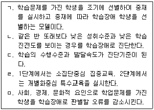
- ㄴ, ㄹ
- ㄷ, ㄹ
- ㄱ, ㄷ, ㅁ
- ㄱ, ㄴ, ㄷ, ㅁ
- ㄴ, ㄷ, ㄹ, ㅁ
(정답률: 알수없음)
91. 학습동기에 관한 내용으로 옳은 것은?
- 성인의 경우 만족감, 자아존중감 증진, 삶의 질 향상 같은 외적 요인에 의해 동기화 된다.
- 계획세우기, 시연, 의사결정, 문제해결, 평가 등은 동기의 정신적 활동에 속한다.
- 레닝거(K. Renninger)는 학습동기를 외재적 동기와 내재적 동기, 무동기로 구분한 학자이다.
- 동기유발을 위한 활동은 목표를 포함하지 않아도 된다.
- 학업성취는 학습동기의 외적 동기에 해당한다.
(정답률: 알수없음)
92. 학습장애 진단 평가 과정을 순서대로 나열한 것은?
- ㄱ - ㄴ - ㄷ - ㅁ – ㄹ
- ㄱ - ㄹ - ㄴ - ㅁ – ㄷ
- ㄴ - ㄱ - ㄷ - ㄹ - ㅁ
- ㄴ - ㄷ - ㄱ - ㄹ – ㅁ
- ㄷ - ㄱ - ㄹ - ㅁ - ㄴ
(정답률: 알수없음)
93. 학습부진 영재아 상담의 고려사항으로 옳지 않은 것은?
- 지적 능력과 학업적 수행간의 불일치가 일어나고 있는 내담자의 특성을 고려해야 한다.
- 부진보다는 영재성에 우선 관심을 두고 조력해야 한다.
- 부적합한 교수 또는 학습전략으로 인해 성취실패를 반복하는 경우 좌절감을 가질 수 있으므로 정서적 접근의 상담이 동반되어야 한다.
- 완벽주의 경향을 가진 학습부진 영재아는 성공할 가능성이 있는 학업만 선택하는 경향이 있으므로 자신의 완벽주의 경향을 인식하고 조절하도록 도와주어야 한다.
- 실패에 대한 지각은 낮고 성공에 대한 지각은 높게 가지는 경향성을 고려하여 상담전략을 구상해야 한다.
(정답률: 알수없음)
94. 켈러(J. Keller)의 학습동기유발이론 ARCS모형의 요소에 해당하는 것을 모두 고른 것은?
- ㄱ, ㄷ
- ㄷ, ㅁ
- ㄴ, ㄷ, ㄹ
- ㄱ, ㄴ, ㄷ, ㅁ
- ㄱ, ㄷ, ㄹ, ㅁ
(정답률: 알수없음)
95. 고등학생 민주가 호소하는 고민의 내용이다. 상담자의 행동으로 옳지 않은 것은?
- 민주의 호소내용은 시험불안에 관한 것임을 알아차리고 시험불안에 대해 다룬다.
- 시험불안의 요인인 걱정과 감정 중 어떤 요인이 현재 민주에게 더 큰 영향을 미치고 있는지를 파악한다.
- 민주가 경험하고 있는 시험불안의 원인을 탐색한다.
- 호소문제를 효과적으로 다루기 위해 민주와의 상담관계를 형성하는데 주력한다.
- 합리적 사고를 가지도록 체계적 둔감법을 훈련한다.
(정답률: 알수없음)
96. 학습관련문제 진단을 위해 사용하는 검사로 옳게 연결되지 않은 것은?
- K-WISC-V : 시공간, 유동추론, 작업기억, 처리속도 등 4개 지표척도로 구성되어 있다.
- LDSS : 학습장애 위험 가능성이 있는지를 평가하는 검사로 고위험군 선별에 사용하고 있다.
- BASA : 학생들이 실제로 배우는 기초학습기능에 근거하여 수행정도를 평가하는 검사이다.
- MLST : 학습의 다양한 요인을 확인 후 학습의 효율성을 높이기 위해 실시하는 검사로 학습문제를 수정, 개입하는데 활용하는 검사이다.
- ALSA : 학습동기, 자기효능감, 학습기술, 학습시간, 환경관리(자원관리기술) 등이 하위척도에 해당한다.
(정답률: 알수없음)
97. 학업상담 과정을 순서대로 나열한 것은?
- 사례관리 - 문제진단 - 목표설정 - 상담관계 형성
- 상담구조화 - 개입전략 설정 - 목표설정 - 사례관리
- 문제진단 - 목표설정 - 개입전략 설정 - 사례관리
- 문제진단 - 상담관계 형성 - 사례관리 - 개입전략 설정
- 개입전략 설정 - 문제진단 - 목표설정 - 사례관리
(정답률: 알수없음)
98. 학습 무동기에 관한 내용으로 옳지 않은 것은?
- 데시(E. Deci)와 라이언(R. Ryan)은 동기의 변화 과정을 무동기, 내재적 동기, 외재적 동기 순으로 발달해간다고 설명하였다.
- 사회적 보상에 둔감하고 인내력이 낮은 특성은 학습 무동기의 기질적 원인에 해당한다.
- 학습동기가 내면화되지 않은 상태이다.
- 학습된 무기력과 관련되어 있으며 자신의 반응이 어떠한 영향도 미칠 수 없다는 것을 학습한 결과에 기인한다.
- 매슬로우(A. Maslow)의 욕구위계이론에 기초하여 무동기의 원인을 설명하는 입장은 인간중심적 관점이다.
(정답률: 알수없음)
99. 학습장애에 관한 설명으로 옳은 것은?
- 산술 곤란형은 특정학습장애에 해당한다.
- 정신지체로 인해 학업성취도가 떨어지는 장애도 학습장애에 해당한다.
- 시각장애, 청각장애로 인해 학력이 지체된 아동은 학습장애 아동으로 분류한다.
- DSM-5에서 특정학습장애는 장애 상태에 따라 심각도를 명시하지 않으며 유형으로 분류하고 있다.
- 개입전략으로 교사주도적 교수법과 약물치료가 효과적이다.
(정답률: 알수없음)
100. 학업문제 유형에 포함하는 것을 모두 고른 것은?
- ㄱ, ㄴ
- ㄴ, ㄷ
- ㄱ, ㄴ, ㄷ
- ㄴ, ㄷ, ㄹ
- ㄱ, ㄴ, ㄷ, ㄹ
(정답률: 알수없음)
ㄱ단계에서는 진로탐색을 위한 자기이해와 진로이해를 위한 자기성향 및 관심분야 파악이 이루어집니다.
ㄴ단계에서는 진로탐색을 위한 정보수집과 진로선택을 위한 정보분석이 이루어집니다.
ㄹ단계에서는 진로선택을 위한 계획수립과 진로실행을 위한 자원활용이 이루어집니다.
ㄷ단계에서는 진로실행을 위한 문제해결과 적응을 위한 자기개발이 이루어집니다.
ㅁ단계에서는 진로실행 후에도 지속적인 진로관리와 발전을 위한 자기평가와 피드백이 이루어집니다.
이 중에서 "ㄱ - ㄴ - ㄹ - ㄷ - ㅁ" 순서가 가장 적절한 이유는, 진로탐색을 위한 자기이해와 진로이해를 먼저 하고, 그 다음에 정보수집과 분석, 계획수립과 자원활용, 문제해결과 적응, 자기평가와 피드백 순서로 진행하면 보다 체계적이고 효과적인 진로상담이 가능하기 때문입니다.